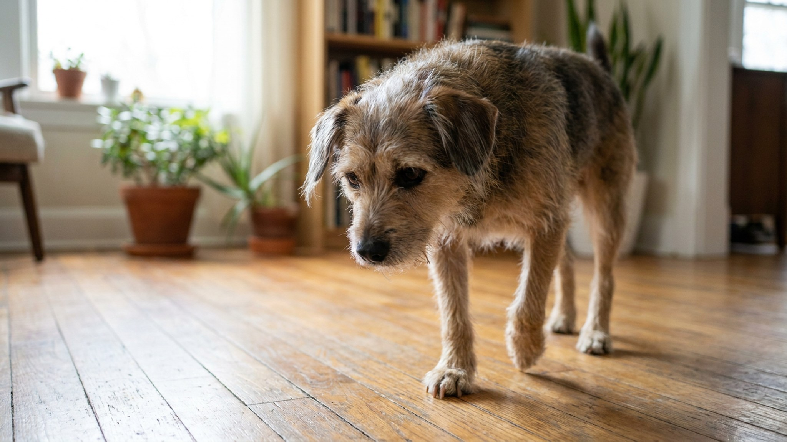

Когти питомца цокают по полу: что слышат соседи и как это исправить

13 июня 2026 · 7 минут чтения · Жизнь с питомцем
Ночью по квартире прохаживается кот — цок-цок-цок по ламинату. Соседи снизу это слышат. Особенно заметно в тихих домах с железобетонными перекрытиями, где ударный шум передаётся хорошо. Проблема решается без радикальных мер — разбираем, что работает и почему стрижка когтей — это лишь часть ответа.
🐾 Питомец ведёт себя странно?
AnimaLife расшифрует поведение кошки и собаки и подскажет, что делать. Попробуйте бесплатно прямо в мессенджере.
Открыть в Telegram → Открыть в MAX →
Почему когти питомца слышно снизу
В типовых многоэтажках с железобетонными перекрытиями ударный шум передаётся значительно лучше воздушного. Цокот когтей — именно ударный звук: короткий, повторяющийся, с частотой 2–4 Гц при ходьбе. Соседи снизу воспринимают его как точечные удары по потолку — что раздражает сильнее, чем непрерывный шум.
- Ламинат и паркетная доска резонируют лучше, чем ковровое покрытие или пробка.
- Кошка весит 3–5 кг, но её когти создают локальное давление значительно выше из-за малой площади контакта.
- Собаки крупных пород — отдельная история: при весе 20–30 кг и длинных когтях звук хорошо слышен даже через толстое перекрытие.
Способ 1: регулярная стрижка когтей
Самый очевидный шаг — и самый недооценённый. Длинные когти создают звук именно потому, что выступают за подушечки лап и касаются пола раньше мягкой части. Хорошо подстриженные когти — тихий питомец.
- Кошка: когти стригут раз в 3–4 недели. У кошек, которые почти не точат когти (нет когтеточки, живут только в квартире), — чаще.
- Собака: раз в 2–4 недели в зависимости от скорости роста и износа на прогулках. Городская собака, гуляющая по асфальту, стачивает когти сама; деревенская или редко гуляющая — нет.
- Ориентир: когти не должны касаться пола, когда животное стоит в нормальной стойке. Если слышен цокот при ходьбе — уже пора стричь.
- Чёрные когти у собак — стригут осторожно, небольшими срезами. Не видя живого слоя, лучше стричь чаще и понемногу, чем один раз много.
Способ 2: мягкие накладки на когти